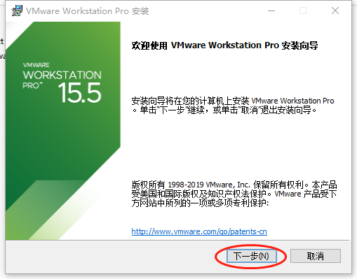

<!doctype html>
<html style='font-size:24px !important'>
<head>
<meta charset='UTF-8'><meta name='viewport' content='width=device-width initial-scale=1'>
<title>教学环境软件安装指导手册_AID(20200701版)</title><link href='https://fonts.loli.net/css?family=Open+Sans:400italic,700italic,700,400&subset=latin,latin-ext' rel='stylesheet' type='text/css' /><style type='text/css'>html {overflow-x: initial !important;}:root { --bg-color: #ffffff; --text-color: #333333; --select-text-bg-color: #B5D6FC; --select-text-font-color: auto; --monospace: 'Lucida Console',Consolas,'Courier',monospace; }
html { font-size: 14px; background-color: var(--bg-color); color: var(--text-color); font-family: 'Helvetica Neue', Helvetica, Arial, sans-serif; -webkit-font-smoothing: antialiased; }
body { margin: 0px; padding: 0px; height: auto; bottom: 0px; top: 0px; left: 0px; right: 0px; font-size: 1rem; line-height: 1.42857143; overflow-x: hidden; background-image: inherit; background-size: inherit; background-attachment: inherit; background-origin: inherit; background-clip: inherit; background-color: inherit; tab-size: 4; background-position: inherit inherit; background-repeat: inherit inherit; }
iframe { margin: auto; }
a.url { word-break: break-all; }
a:active, a:hover { outline: 0px; }
.in-text-selection, ::selection { text-shadow: none; background: var(--select-text-bg-color); color: var(--select-text-font-color); }
#write { margin: 0px auto; height: auto; width: inherit; word-break: normal; word-wrap: break-word; position: relative; white-space: normal; overflow-x: visible; padding-top: 40px; }
#write.first-line-indent p { text-indent: 2em; }
#write.first-line-indent li p, #write.first-line-indent p * { text-indent: 0px; }
#write.first-line-indent li { margin-left: 2em; }
.for-image #write { padding-left: 8px; padding-right: 8px; }
body.typora-export { padding-left: 30px; padding-right: 30px; }
.typora-export .footnote-line, .typora-export li, .typora-export p { white-space: pre-wrap; }
@media screen and (max-width: 500px) { 
  body.typora-export { padding-left: 0px; padding-right: 0px; }
  #write { padding-left: 20px; padding-right: 20px; }
  .CodeMirror-sizer { margin-left: 0px !important; }
  .CodeMirror-gutters { display: none !important; }
}
#write li > figure:last-child { margin-bottom: 0.5rem; }
#write ol, #write ul { position: relative; }
img { max-width: 100%; vertical-align: middle; }
button, input, select, textarea { color: inherit; font-family: inherit; font-size: inherit; font-style: inherit; font-variant-caps: inherit; font-weight: inherit; line-height: inherit; }
input[type="checkbox"], input[type="radio"] { line-height: normal; padding: 0px; }
*, ::after, ::before { box-sizing: border-box; }
#write h1, #write h2, #write h3, #write h4, #write h5, #write h6, #write p, #write pre { width: inherit; }
#write h1, #write h2, #write h3, #write h4, #write h5, #write h6, #write p { position: relative; }
p { line-height: inherit; }
h1, h2, h3, h4, h5, h6 { break-after: avoid-page; break-inside: avoid; orphans: 2; }
p { orphans: 4; }
h1 { font-size: 2rem; }
h2 { font-size: 1.8rem; }
h3 { font-size: 1.6rem; }
h4 { font-size: 1.4rem; }
h5 { font-size: 1.2rem; }
h6 { font-size: 1rem; }
.md-math-block, .md-rawblock, h1, h2, h3, h4, h5, h6, p { margin-top: 1rem; margin-bottom: 1rem; }
.hidden { display: none; }
.md-blockmeta { color: rgb(204, 204, 204); font-weight: 700; font-style: italic; }
a { cursor: pointer; }
sup.md-footnote { padding: 2px 4px; background-color: rgba(238, 238, 238, 0.701961); color: rgb(85, 85, 85); border-top-left-radius: 4px; border-top-right-radius: 4px; border-bottom-right-radius: 4px; border-bottom-left-radius: 4px; cursor: pointer; }
sup.md-footnote a, sup.md-footnote a:hover { color: inherit; text-transform: inherit; text-decoration: inherit; }
#write input[type="checkbox"] { cursor: pointer; width: inherit; height: inherit; }
figure { overflow-x: auto; margin: 1.2em 0px; max-width: calc(100% + 16px); padding: 0px; }
figure > table { margin: 0px !important; }
tr { break-inside: avoid; break-after: auto; }
thead { display: table-header-group; }
table { border-collapse: collapse; border-spacing: 0px; width: 100%; overflow: auto; break-inside: auto; text-align: left; }
table.md-table td { min-width: 32px; }
.CodeMirror-gutters { border-right-width: 0px; background-color: inherit; }
.CodeMirror-linenumber { }
.CodeMirror { text-align: left; }
.CodeMirror-placeholder { opacity: 0.3; }
.CodeMirror pre { padding: 0px 4px; }
.CodeMirror-lines { padding: 0px; }
div.hr:focus { cursor: none; }
#write pre { white-space: pre-wrap; }
#write.fences-no-line-wrapping pre { white-space: pre; }
#write pre.ty-contain-cm { white-space: normal; }
.CodeMirror-gutters { margin-right: 4px; }
.md-fences { font-size: 0.9rem; display: block; break-inside: avoid; text-align: left; overflow: visible; white-space: pre; background-image: inherit; background-size: inherit; background-attachment: inherit; background-origin: inherit; background-clip: inherit; background-color: inherit; position: relative !important; background-position: inherit inherit; background-repeat: inherit inherit; }
.md-diagram-panel { width: 100%; margin-top: 10px; text-align: center; padding-top: 0px; padding-bottom: 8px; overflow-x: auto; }
#write .md-fences.mock-cm { white-space: pre-wrap; }
.md-fences.md-fences-with-lineno { padding-left: 0px; }
#write.fences-no-line-wrapping .md-fences.mock-cm { white-space: pre; overflow-x: auto; }
.md-fences.mock-cm.md-fences-with-lineno { padding-left: 8px; }
.CodeMirror-line, twitterwidget { break-inside: avoid; }
.footnotes { opacity: 0.8; font-size: 0.9rem; margin-top: 1em; margin-bottom: 1em; }
.footnotes + .footnotes { margin-top: 0px; }
.md-reset { margin: 0px; padding: 0px; border: 0px; outline: 0px; vertical-align: top; text-decoration: none; text-shadow: none; float: none; position: static; width: auto; height: auto; white-space: nowrap; cursor: inherit; line-height: normal; font-weight: 400; text-align: left; box-sizing: content-box; direction: ltr; background-position: 0px 0px; background-repeat: initial initial; }
li div { padding-top: 0px; }
blockquote { margin: 1rem 0px; }
li .mathjax-block, li p { margin: 0.5rem 0px; }
li { margin: 0px; position: relative; }
blockquote > :last-child { margin-bottom: 0px; }
blockquote > :first-child, li > :first-child { margin-top: 0px; }
.footnotes-area { color: rgb(136, 136, 136); margin-top: 0.714rem; padding-bottom: 0.143rem; white-space: normal; }
#write .footnote-line { white-space: pre-wrap; }
@media print { 
  body, html { border: 1px solid transparent; height: 99%; break-after: avoid-page; break-before: avoid-page; }
  #write { margin-top: 0px; padding-top: 0px; border-color: transparent !important; }
  .typora-export * { -webkit-print-color-adjust: exact; }
  html.blink-to-pdf { font-size: 13px; }
  .typora-export #write { padding-left: 32px; padding-right: 32px; padding-bottom: 0px; break-after: avoid-page; }
  .typora-export #write::after { height: 0px; }
}
.footnote-line { margin-top: 0.714em; font-size: 0.7em; }
a img, img a { cursor: pointer; }
pre.md-meta-block { font-size: 0.8rem; min-height: 0.8rem; white-space: pre-wrap; background-color: rgb(204, 204, 204); display: block; overflow-x: hidden; background-position: initial initial; background-repeat: initial initial; }
p > .md-image:only-child:not(.md-img-error) img, p > img:only-child { display: block; margin: auto; }
p > .md-image:only-child { display: inline-block; width: 100%; }
#write .MathJax_Display { margin: 0.8em 0px 0px; }
.md-math-block { width: 100%; }
.md-math-block:not(:empty)::after { display: none; }
[contenteditable="true"]:active, [contenteditable="true"]:focus { outline: 0px; box-shadow: none; }
.md-task-list-item { position: relative; list-style-type: none; }
.task-list-item.md-task-list-item { padding-left: 0px; }
.md-task-list-item > input { position: absolute; top: 0px; left: 0px; margin-left: -1.2em; margin-top: calc(1em - 10px); border: none; }
.math { font-size: 1rem; }
.md-toc { min-height: 3.58rem; position: relative; font-size: 0.9rem; border-top-left-radius: 10px; border-top-right-radius: 10px; border-bottom-right-radius: 10px; border-bottom-left-radius: 10px; }
.md-toc-content { position: relative; margin-left: 0px; }
.md-toc-content::after, .md-toc::after { display: none; }
.md-toc-item { display: block; color: rgb(65, 131, 196); }
.md-toc-item a { text-decoration: none; }
.md-toc-inner:hover { text-decoration: underline; }
.md-toc-inner { display: inline-block; cursor: pointer; }
.md-toc-h1 .md-toc-inner { margin-left: 0px; font-weight: 700; }
.md-toc-h2 .md-toc-inner { margin-left: 2em; }
.md-toc-h3 .md-toc-inner { margin-left: 4em; }
.md-toc-h4 .md-toc-inner { margin-left: 6em; }
.md-toc-h5 .md-toc-inner { margin-left: 8em; }
.md-toc-h6 .md-toc-inner { margin-left: 10em; }
@media screen and (max-width: 48em) { 
  .md-toc-h3 .md-toc-inner { margin-left: 3.5em; }
  .md-toc-h4 .md-toc-inner { margin-left: 5em; }
  .md-toc-h5 .md-toc-inner { margin-left: 6.5em; }
  .md-toc-h6 .md-toc-inner { margin-left: 8em; }
}
a.md-toc-inner { font-size: inherit; font-style: inherit; font-weight: inherit; line-height: inherit; }
.footnote-line a:not(.reversefootnote) { color: inherit; }
.md-attr { display: none; }
.md-fn-count::after { content: '.'; }
code, pre, samp, tt { font-family: var(--monospace); }
kbd { margin: 0px 0.1em; padding: 0.1em 0.6em; font-size: 0.8em; color: rgb(36, 39, 41); background-color: rgb(255, 255, 255); border: 1px solid rgb(173, 179, 185); border-top-left-radius: 3px; border-top-right-radius: 3px; border-bottom-right-radius: 3px; border-bottom-left-radius: 3px; box-shadow: rgba(12, 13, 14, 0.2) 0px 1px 0px, rgb(255, 255, 255) 0px 0px 0px 2px inset; white-space: nowrap; vertical-align: middle; background-position: initial initial; background-repeat: initial initial; }
.md-comment { color: rgb(162, 127, 3); opacity: 0.8; font-family: var(--monospace); }
code { text-align: left; }
a.md-print-anchor { white-space: pre !important; border: none !important; display: inline-block !important; position: absolute !important; width: 1px !important; right: 0px !important; outline: 0px !important; text-shadow: initial !important; background-position: 0px 0px !important; background-repeat: initial initial !important; }
.md-inline-math .MathJax_SVG .noError { display: none !important; }
.html-for-mac .inline-math-svg .MathJax_SVG { vertical-align: 0.2px; }
.md-math-block .MathJax_SVG_Display { text-align: center; margin: 0px; position: relative; text-indent: 0px; max-width: none; max-height: none; min-height: 0px; min-width: 100%; width: auto; overflow-y: hidden; display: block !important; }
.MathJax_SVG_Display, .md-inline-math .MathJax_SVG_Display { width: auto; margin: inherit; display: inline-block !important; }
.MathJax_SVG .MJX-monospace { font-family: var(--monospace); }
.MathJax_SVG .MJX-sans-serif { font-family: sans-serif; }
.MathJax_SVG { display: inline; font-style: normal; font-weight: 400; line-height: normal; zoom: 90%; text-indent: 0px; text-align: left; text-transform: none; letter-spacing: normal; word-spacing: normal; word-wrap: normal; white-space: nowrap; float: none; direction: ltr; max-width: none; max-height: none; min-width: 0px; min-height: 0px; border: 0px; padding: 0px; margin: 0px; }
.MathJax_SVG * { transition: none; }
.MathJax_SVG_Display svg { vertical-align: middle !important; margin-bottom: 0px !important; margin-top: 0px !important; }
.os-windows.monocolor-emoji .md-emoji { font-family: 'Segoe UI Symbol', sans-serif; }
.md-diagram-panel > svg { max-width: 100%; }
[lang="mermaid"] svg, [lang="flow"] svg { max-width: 100%; height: auto; }
[lang="mermaid"] .node text { font-size: 1rem; }
table tr th { border-bottom-width: 0px; }
video { max-width: 100%; display: block; margin: 0px auto; }
iframe { max-width: 100%; width: 100%; border: none; }
.highlight td, .highlight tr { border: 0px; }


:root {
    --side-bar-bg-color: #fafafa;
    --control-text-color: #777;
}

@include-when-export url(https://fonts.loli.net/css?family=Open+Sans:400italic,700italic,700,400&subset=latin,latin-ext);

html {
    font-size: 16px;
}

body {
    font-family: "Open Sans","Clear Sans","Helvetica Neue",Helvetica,Arial,sans-serif;
    color: rgb(51, 51, 51);
    line-height: 1.6;
}

#write {
    max-width: 860px;
  	margin: 0 auto;
  	padding: 30px;
    padding-bottom: 100px;
}
#write > ul:first-child,
#write > ol:first-child{
    margin-top: 30px;
}

a {
    color: #4183C4;
}
h1,
h2,
h3,
h4,
h5,
h6 {
    position: relative;
    margin-top: 1rem;
    margin-bottom: 1rem;
    font-weight: bold;
    line-height: 1.4;
    cursor: text;
}
h1:hover a.anchor,
h2:hover a.anchor,
h3:hover a.anchor,
h4:hover a.anchor,
h5:hover a.anchor,
h6:hover a.anchor {
    text-decoration: none;
}
h1 tt,
h1 code {
    font-size: inherit;
}
h2 tt,
h2 code {
    font-size: inherit;
}
h3 tt,
h3 code {
    font-size: inherit;
}
h4 tt,
h4 code {
    font-size: inherit;
}
h5 tt,
h5 code {
    font-size: inherit;
}
h6 tt,
h6 code {
    font-size: inherit;
}
h1 {
    padding-bottom: .3em;
    font-size: 2.25em;
    line-height: 1.2;
    border-bottom: 1px solid #eee;
}
h2 {
   padding-bottom: .3em;
    font-size: 1.75em;
    line-height: 1.225;
    border-bottom: 1px solid #eee;
}
h3 {
    font-size: 1.5em;
    line-height: 1.43;
}
h4 {
    font-size: 1.25em;
}
h5 {
    font-size: 1em;
}
h6 {
   font-size: 1em;
    color: #777;
}
p,
blockquote,
ul,
ol,
dl,
table{
    margin: 0.8em 0;
}
li>ol,
li>ul {
    margin: 0 0;
}
hr {
    height: 2px;
    padding: 0;
    margin: 16px 0;
    background-color: #e7e7e7;
    border: 0 none;
    overflow: hidden;
    box-sizing: content-box;
}

li p.first {
    display: inline-block;
}
ul,
ol {
    padding-left: 30px;
}
ul:first-child,
ol:first-child {
    margin-top: 0;
}
ul:last-child,
ol:last-child {
    margin-bottom: 0;
}
blockquote {
    border-left: 4px solid #dfe2e5;
    padding: 0 15px;
    color: #777777;
}
blockquote blockquote {
    padding-right: 0;
}
table {
    padding: 0;
    word-break: initial;
}
table tr {
    border-top: 1px solid #dfe2e5;
    margin: 0;
    padding: 0;
}
table tr:nth-child(2n),
thead {
    background-color: #f8f8f8;
}
table tr th {
    font-weight: bold;
    border: 1px solid #dfe2e5;
    border-bottom: 0;
    text-align: left;
    margin: 0;
    padding: 6px 13px;
}
table tr td {
    border: 1px solid #dfe2e5;
    text-align: left;
    margin: 0;
    padding: 6px 13px;
}
table tr th:first-child,
table tr td:first-child {
    margin-top: 0;
}
table tr th:last-child,
table tr td:last-child {
    margin-bottom: 0;
}

.CodeMirror-lines {
    padding-left: 4px;
}

.code-tooltip {
    box-shadow: 0 1px 1px 0 rgba(0,28,36,.3);
    border-top: 1px solid #eef2f2;
}

.md-fences,
code,
tt {
    border: 1px solid #e7eaed;
    background-color: #f8f8f8;
    border-radius: 3px;
    padding: 0;
    padding: 2px 4px 0px 4px;
    font-size: 0.9em;
}

code {
    background-color: #f3f4f4;
    padding: 0 2px 0 2px;
}

.md-fences {
    margin-bottom: 15px;
    margin-top: 15px;
    padding-top: 8px;
    padding-bottom: 6px;
}


.md-task-list-item > input {
  margin-left: -1.3em;
}

@media print {
    html {
        font-size: 13px;
    }
    table,
    pre {
        page-break-inside: avoid;
    }
    pre {
        word-wrap: break-word;
    }
}

.md-fences {
	background-color: #f8f8f8;
}
#write pre.md-meta-block {
	padding: 1rem;
    font-size: 85%;
    line-height: 1.45;
    background-color: #f7f7f7;
    border: 0;
    border-radius: 3px;
    color: #777777;
    margin-top: 0 !important;
}

.mathjax-block>.code-tooltip {
	bottom: .375rem;
}

.md-mathjax-midline {
    background: #fafafa;
}

#write>h3.md-focus:before{
	left: -1.5625rem;
	top: .375rem;
}
#write>h4.md-focus:before{
	left: -1.5625rem;
	top: .285714286rem;
}
#write>h5.md-focus:before{
	left: -1.5625rem;
	top: .285714286rem;
}
#write>h6.md-focus:before{
	left: -1.5625rem;
	top: .285714286rem;
}
.md-image>.md-meta {
    /*border: 1px solid #ddd;*/
    border-radius: 3px;
    padding: 2px 0px 0px 4px;
    font-size: 0.9em;
    color: inherit;
}

.md-tag {
    color: #a7a7a7;
    opacity: 1;
}

.md-toc { 
    margin-top:20px;
    padding-bottom:20px;
}

.sidebar-tabs {
    border-bottom: none;
}

#typora-quick-open {
    border: 1px solid #ddd;
    background-color: #f8f8f8;
}

#typora-quick-open-item {
    background-color: #FAFAFA;
    border-color: #FEFEFE #e5e5e5 #e5e5e5 #eee;
    border-style: solid;
    border-width: 1px;
}

/** focus mode */
.on-focus-mode blockquote {
    border-left-color: rgba(85, 85, 85, 0.12);
}

header, .context-menu, .megamenu-content, footer{
    font-family: "Segoe UI", "Arial", sans-serif;
}

.file-node-content:hover .file-node-icon,
.file-node-content:hover .file-node-open-state{
    visibility: visible;
}

.mac-seamless-mode #typora-sidebar {
    background-color: #fafafa;
    background-color: var(--side-bar-bg-color);
}

.md-lang {
    color: #b4654d;
}

.html-for-mac .context-menu {
    --item-hover-bg-color: #E6F0FE;
}

#md-notification .btn {
    border: 0;
}

.dropdown-menu .divider {
    border-color: #e5e5e5;
}

 .typora-export li, .typora-export p, .typora-export,  .footnote-line {white-space: normal;} 
</style>
</head>
<body class='typora-export' >
<div  id='write'  class = 'is-mac'><h1><a name="python+%E4%BA%BA%E5%B7%A5%E6%99%BA%E8%83%BD%E6%95%99%E5%AD%A6%E7%8E%AF%E5%A2%83%E5%AE%89%E8%A3%85%E6%89%8B%E5%86%8C" class="md-header-anchor"></a><span>Python+人工智能教学环境安装手册</span></h1><blockquote><p><span>达内  Python人工智能学院</span><br/><span>2020年7月</span>
<span>魏明择</span></p></blockquote><div class='md-toc' mdtype='toc'><p class="md-toc-content"><span class="md-toc-item md-toc-h1" data-ref="n253"><a class="md-toc-inner" href="#python+%E4%BA%BA%E5%B7%A5%E6%99%BA%E8%83%BD%E6%95%99%E5%AD%A6%E7%8E%AF%E5%A2%83%E5%AE%89%E8%A3%85%E6%89%8B%E5%86%8C">Python+人工智能教学环境安装手册</a></span><span class="md-toc-item md-toc-h2" data-ref="n258"><a class="md-toc-inner" href="#%E4%B8%80%E3%80%81%E4%B8%BB%E8%A6%81%E8%BD%AF%E4%BB%B6%E7%8E%AF%E5%A2%83">一、主要软件环境</a></span><span class="md-toc-item md-toc-h2" data-ref="n267"><a class="md-toc-inner" href="#%E4%BA%8C%E3%80%81%E8%AE%A1%E7%AE%97%E6%9C%BA%E9%85%8D%E7%BD%AE%E8%A6%81%E6%B1%82">二、计算机配置要求</a></span><span class="md-toc-item md-toc-h2" data-ref="n273"><a class="md-toc-inner" href="#%E4%B8%89%E3%80%81%E9%83%A8%E7%BD%B2%E6%95%99%E5%AD%A6%E7%8E%AF%E5%A2%83%EF%BC%88%E9%80%82%E7%94%A8%E4%BA%8Ewindows%E7%B3%BB%E7%BB%9F%EF%BC%89">三、部署教学环境（适用于Windows系统）</a></span><span class="md-toc-item md-toc-h3" data-ref="n274"><a class="md-toc-inner" href="#1.-%E8%8E%B7%E5%8F%96%E6%95%99%E5%AD%A6%E7%8E%AF%E5%A2%83%E7%BD%91%E7%9B%98%E8%B5%84%E6%BA%90">1. 获取教学环境网盘资源</a></span><span class="md-toc-item md-toc-h3" data-ref="n276"><a class="md-toc-inner" href="#2.-%E5%AE%89%E8%A3%85%E8%99%9A%E6%8B%9F%E6%9C%BA%E8%BD%AF%E4%BB%B6-vmware-workstation-pro">2. 安装虚拟机软件 VMware Workstation Pro</a></span><span class="md-toc-item md-toc-h3" data-ref="n286"><a class="md-toc-inner" href="#3.-%E4%B8%8B%E8%BD%BD%E5%B9%B6%E8%A7%A3%E5%8E%8B%E7%BC%A9-ubuntu18.04-linux-%E8%99%9A%E6%8B%9F%E6%9C%BA%E9%95%9C%E5%83%8F%E6%96%87%E4%BB%B6">3. 下载并解压缩 Ubuntu18.04 Linux 虚拟机镜像文件</a></span><span class="md-toc-item md-toc-h3" data-ref="n288"><a class="md-toc-inner" href="#4.-%E6%89%93%E5%BC%80%E8%99%9A%E6%8B%9F%E6%9C%BA%E9%95%9C%E5%83%8F%E6%96%87%E4%BB%B6%E5%B9%B6%E8%BF%90%E8%A1%8C">4. 打开虚拟机镜像文件并运行</a></span><span class="md-toc-item md-toc-h2" data-ref="n310"><a class="md-toc-inner" href="#%E5%9B%9B%E3%80%81%E9%83%A8%E7%BD%B2%E6%95%99%E5%AD%A6%E7%8E%AF%E5%A2%83%EF%BC%88%E9%80%82%E7%94%A8%E4%BA%8E-mac-os-x-%E7%B3%BB%E7%BB%9F%EF%BC%89">四、部署教学环境（适用于 Mac OS X 系统）</a></span><span class="md-toc-item md-toc-h3" data-ref="n311"><a class="md-toc-inner" href="#1.-%E8%8E%B7%E5%8F%96%E6%95%99%E5%AD%A6%E7%8E%AF%E5%A2%83%E7%BD%91%E7%9B%98%E8%B5%84%E6%BA%90">1. 获取教学环境网盘资源</a></span><span class="md-toc-item md-toc-h3" data-ref="n313"><a class="md-toc-inner" href="#2.-%E5%AE%89%E8%A3%85%E8%99%9A%E6%8B%9F%E6%9C%BA%E8%BD%AF%E4%BB%B6-vmware-fusion">2. 安装虚拟机软件 VMware Fusion</a></span><span class="md-toc-item md-toc-h3" data-ref="n323"><a class="md-toc-inner" href="#3.-%E4%B8%8B%E8%BD%BD%E5%B9%B6%E8%A7%A3%E5%8E%8B%E7%BC%A9-ubuntu18.04-linux-%E8%99%9A%E6%8B%9F%E6%9C%BA%E9%95%9C%E5%83%8F%E6%96%87%E4%BB%B6">3. 下载并解压缩 Ubuntu18.04 Linux 虚拟机镜像文件</a></span><span class="md-toc-item md-toc-h3" data-ref="n325"><a class="md-toc-inner" href="#4.-%E6%89%93%E5%BC%80%E8%99%9A%E6%8B%9F%E6%9C%BA%E9%95%9C%E5%83%8F%E6%96%87%E4%BB%B6%E5%B9%B6%E8%BF%90%E8%A1%8C">4. 打开虚拟机镜像文件并运行</a></span></p></div><h2><a name="%E4%B8%80%E3%80%81%E4%B8%BB%E8%A6%81%E8%BD%AF%E4%BB%B6%E7%8E%AF%E5%A2%83" class="md-header-anchor"></a><span>一、主要软件环境</span></h2><p><span>为了更顺利完成AID课程的学习，建议统一使用集团提供的Linux教学环境（不建议自己DIY教学环境）。因为从第二阶段到第五阶段会用到近百个安装包，且可能存在一些版本兼容问题，使用统一的环境可以快速满足实验需要。</span><br/><span>主要部署过程：</span></p><ol start='' ><li><span>安装虚拟机软件VMware（区分Windows、Mac OS X两个版本）</span></li><li><span>下载并解压缩 Ubuntu18.04 Linux虚拟机镜像文件</span></li><li><span>用虚拟机软件打开Linux（Ubuntu 18.04）虚拟机镜像文件并运行</span></li></ol><h2><a name="%E4%BA%8C%E3%80%81%E8%AE%A1%E7%AE%97%E6%9C%BA%E9%85%8D%E7%BD%AE%E8%A6%81%E6%B1%82" class="md-header-anchor"></a><span>二、计算机配置要求</span></h2><ol start='' ><li><span>内存8G（或8G以上，建议16G)；</span></li><li><span>CPU处理器需要支持虚拟化</span><br/><span>在电脑开机时按住 </span><code>DEL</code><span> 键（或者 </span><code>F2</code><span>、</span><code>ESC</code><span>、</span><code>F12</code><span> 键） 进入BIOS设置程序（机器主板型号不同进BIOS 的方法可能会有差异，详情咨询电脑厂商或者自行百度），打开VT 虚拟化开关即可。</span><br/><span>另可参见如下文章：</span><br/><a href='https://jingyan.baidu.com/article/4b52d702f9c25cfc5d774b5a.html' target='_blank' class='url'>https://jingyan.baidu.com/article/4b52d702f9c25cfc5d774b5a.html</a><span></span><br/><a href='https://blog.csdn.net/QQ2119459337/article/details/78874267' target='_blank' class='url'>https://blog.csdn.net/QQ2119459337/article/details/78874267</a></li></ol><h2><a name="%E4%B8%89%E3%80%81%E9%83%A8%E7%BD%B2%E6%95%99%E5%AD%A6%E7%8E%AF%E5%A2%83%EF%BC%88%E9%80%82%E7%94%A8%E4%BA%8Ewindows%E7%B3%BB%E7%BB%9F%EF%BC%89" class="md-header-anchor"></a><span>三、部署教学环境（适用于Windows系统）</span></h2><h3><a name="1.-%E8%8E%B7%E5%8F%96%E6%95%99%E5%AD%A6%E7%8E%AF%E5%A2%83%E7%BD%91%E7%9B%98%E8%B5%84%E6%BA%90" class="md-header-anchor"></a><span>1. 获取教学环境网盘资源</span></h3><p><span>百度网盘</span><br/><span>链接: </span><a href='https://pan.baidu.com/s/1tpCtWTskhvDpAZXAm_PPAA' target='_blank' class='url'>https://pan.baidu.com/s/1tpCtWTskhvDpAZXAm_PPAA</a><span></span><br/><span>密码: mp4g</span></p><h3><a name="2.-%E5%AE%89%E8%A3%85%E8%99%9A%E6%8B%9F%E6%9C%BA%E8%BD%AF%E4%BB%B6-vmware-workstation-pro" class="md-header-anchor"></a><span>2. 安装虚拟机软件 VMware Workstation Pro</span></h3><p><span>如果已经安装VMware Player 15，或者VMware Workstation 15及更高版本的软件包，可以跳过此步骤。</span></p><ol start='' ><li><span>下载Windows版的VMware Workstation Pro安装文件</span>
<span>文件位置：</span><code>windows教学环境虚拟机软件</code><span> 目录下</span></li><li><span>双击下载的 “VMware-workstation-full-15.5.1-15018445.exe”并运行安装向导</span><br/></li><li><span>一路点击“下一步”，直至看到“完成”</span><br/><span></span><br/><span></span><br/></li></ol><p>&nbsp;</p><h3><a name="3.-%E4%B8%8B%E8%BD%BD%E5%B9%B6%E8%A7%A3%E5%8E%8B%E7%BC%A9-ubuntu18.04-linux-%E8%99%9A%E6%8B%9F%E6%9C%BA%E9%95%9C%E5%83%8F%E6%96%87%E4%BB%B6" class="md-header-anchor"></a><span>3. 下载并解压缩 Ubuntu18.04 Linux 虚拟机镜像文件</span></h3><p><span>从教学环境网盘资源中找到Linux教学环境Ubuntu18.04镜像文件 目录，下载压缩包文件tedu_aid_ubuntu18.04(20200701).zip，将其解压缩到D盘。</span><br/><span>因文件较大，所以解压时间会长一些，耐心等待解压完成。</span></p><h3><a name="4.-%E6%89%93%E5%BC%80%E8%99%9A%E6%8B%9F%E6%9C%BA%E9%95%9C%E5%83%8F%E6%96%87%E4%BB%B6%E5%B9%B6%E8%BF%90%E8%A1%8C" class="md-header-anchor"></a><span>4. 打开虚拟机镜像文件并运行</span></h3><ol start='' ><li><span>运行 VMware Workstation Pro</span>
<span>双点桌面图标  </span><span>打开VMware Workstation Pro，第一次运行时会有如下提示，请按下图选择</span><br/><span></span><br/></li></ol><ol start='2' ><li><span>在VMware Workstation Pro窗口选择打开D盘中解压缩的虚拟机镜像文件 Ubuntu_64.vmx，步骤如下图：</span><br/><span></span><br/></li></ol><ol start='3' ><li><span>启动并运行虚拟机中Ubuntu Linux 操作系统</span><br/></li><li><span>出现如下提示选择”我已移动该虚拟机”</span><br/></li></ol><p>&nbsp;</p><ol start='5' ><li><span>出现如下界面代表成功，达内人～你懂的！！！</span><br/></li></ol><ul><li><span>如果出现如下界面，说明你的CPU 的 VT 指令没有打开。</span><br/></li></ul><p><span>这个就比较麻烦了，需要进入BIOS 打开virtualization techolog 开关，详见上述</span><code>《计算机配置要求》</code><span>。</span></p><h2><a name="%E5%9B%9B%E3%80%81%E9%83%A8%E7%BD%B2%E6%95%99%E5%AD%A6%E7%8E%AF%E5%A2%83%EF%BC%88%E9%80%82%E7%94%A8%E4%BA%8E-mac-os-x-%E7%B3%BB%E7%BB%9F%EF%BC%89" class="md-header-anchor"></a><span>四、部署教学环境（适用于 Mac OS X 系统）</span></h2><h3><a name="1.-%E8%8E%B7%E5%8F%96%E6%95%99%E5%AD%A6%E7%8E%AF%E5%A2%83%E7%BD%91%E7%9B%98%E8%B5%84%E6%BA%90" class="md-header-anchor"></a><span>1. 获取教学环境网盘资源</span></h3><p><span>百度网盘</span><br/><span>链接: </span><a href='https://pan.baidu.com/s/1tpCtWTskhvDpAZXAm_PPAA' target='_blank' class='url'>https://pan.baidu.com/s/1tpCtWTskhvDpAZXAm_PPAA</a><span></span><br/><span>密码: mp4g</span></p><h3><a name="2.-%E5%AE%89%E8%A3%85%E8%99%9A%E6%8B%9F%E6%9C%BA%E8%BD%AF%E4%BB%B6-vmware-fusion" class="md-header-anchor"></a><span>2. 安装虚拟机软件 VMware Fusion</span></h3><p><span>1) 下载Mac OS X版的VMWare Fusion</span><br/><span>文件位置：mac_os_x教学环境虚拟机软件/VMware Fusion 11 目录</span></p><p><span>2) 双击下载的“VMware-Fusion-11.0.3-12992109.dmg”文件，进入如下界面，将VMWare Fusion.app 拖动到应用程序（Application）中就完成了安装</span><br/></p><p><span>3) 完成注册</span>
<span>VMware Fusion需要注册才能使用，以下是注册步骤。</span><br/></p><p>&nbsp;</p><p><span>第一次启动VMware Fusion时需要注册，注码在sn.txt中</span><br/></p><p><span>4) 打开失败的处理方法</span><br/><span>弹出系统扩展被阻止提示，选择左上角苹果图标里的“系统偏好设置”。</span><br/><span>  </span></p><p><span>进入”安全性与隐私”。</span><br/><span>  </span></p><p><span>点击 来自开发者”VMware inc” 的系统软件已被阻止载入 右侧的 允许 按钮。</span><br/><span>  </span></p><h3><a name="3.-%E4%B8%8B%E8%BD%BD%E5%B9%B6%E8%A7%A3%E5%8E%8B%E7%BC%A9-ubuntu18.04-linux-%E8%99%9A%E6%8B%9F%E6%9C%BA%E9%95%9C%E5%83%8F%E6%96%87%E4%BB%B6" class="md-header-anchor"></a><span>3. 下载并解压缩 Ubuntu18.04 Linux 虚拟机镜像文件</span></h3><p><span>从教学环境网盘资源中找到Linux教学环境Ubuntu18.04镜像文件 目录，下载压缩包文件tedu_aid_ubuntu18.04(20200701).zip，将其解压缩到D盘。</span><br/><span>因文件较大，所以解压时间会长一些，耐心等待解压完成。  </span></p><h3><a name="4.-%E6%89%93%E5%BC%80%E8%99%9A%E6%8B%9F%E6%9C%BA%E9%95%9C%E5%83%8F%E6%96%87%E4%BB%B6%E5%B9%B6%E8%BF%90%E8%A1%8C" class="md-header-anchor"></a><span>4. 打开虚拟机镜像文件并运行</span></h3><p><span>双点图标  </span><span> 运行VMware Fusion，如果提示输入序列号请将sn.txt的序列号复制到注册对话框中。 </span></p><ol start='' ><li><span>选择菜单”打开”解压缩的虚拟机镜像文件 Ubuntu_64.vmx，步骤如下图</span><br/><span>  </span></li></ol><p><span></span>
<span>选择解压缩过的虚拟机镜像文件。</span><br/><span>  </span></p><ol start='2' ><li><span>启动并运行虚拟机中Ubuntu Linux 操作系统</span><br/><span>右键点击 Ubuntu_18.04(20020220) 点击启动</span><br/><span></span><br/><span>        </span></li></ol><p><span>出现如下提示选择”已移动”</span><br/><span>  </span></p><p><span>出现如下界面代表成功，达内人～你懂的，此处不用多说了！！！ </span><br/><span>  </span></p><p><span>至此，教学开发环境安装结束。</span></p></div>
</body>
</html>